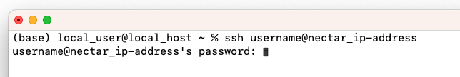
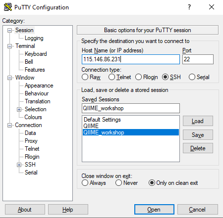
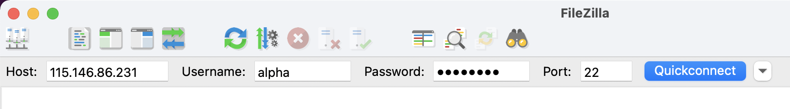

Workshops using Nectar Instances¶
The workshop you will be doing will run on a Nectar Instance. An “Instance” is Nectar terminology for a virtual machine running on the Nectar Cloud OpenStack infrastructure. An “Instance” runs on a “compute node”; i.e. a physical computer populated with processor chips, memory chips and so on.
Required Software¶
Mac Users: No additional software needs to be installed for this workshop. You will use the Terminal app. Files can be transferred between your local computer and the remote Nectar Instance using scp. If you are a novice on the command line, software for transferring files such as FileZilla or Cyberduck can be used.
Windows Users:
1. A terminal emulator such as PuTTY (free and open-source) will need to be downloaded.
2. Software for file transfers between a local computer and remote server such as FileZilla or WinSCP is required.
Logging on to a Nectar Instance¶
You will be given an individual username, IP address and password to log on to using the SSH client tool on your computer (Terminal on Mac or PuTTY on Windows).
Host: The IP address of the Nectar instance
Username: alpha | beta | gamma | delta | epsilon | zeta
Port: 22
Password: Password that has been given to you.
Attention
Follow the instructions for your operating system carefully.
Repeated failed login attempts might result in being locked out of the account.
Mac Users:
In Terminal, type:
ssh username@nectar_ip-address
You will be prompted to enter your password. After you have entered your password, hit return.
Mac Terminal Example

I can’t see my password as I’m typing it
You won’t receive feedback when entering your password. Rest assured it is being entered as you type it (or paste it in). Hit return after you have typed the whole password.
Windows Users:
In PuTTY, enter the IP address as the host name and 22 for the port.
After you click “Open” you’ll be prompted to type the username you have been assigned (i.e. alpha | beta | gamma | delta | epsilon | zeta). Press enter. You will then be prompted for the password that has been given to you. Press enter.
Putty Example

I can’t see my password as I’m typing it
You won’t receive feedback when entering your password. Rest assured it is being entered as you type it (or paste it in). Hit enter after you have typed the whole password.
How can I use copy and paste to enter my password?
PuTTY has a different shortcut for paste compared to what you may be used to. Instead of ctrl-v, try right-clicking in the password field to paste the contents of your clipboard.
Transferring files between your computer and Nectar Instance¶
Host: The IP address of the Nectar instance
Username: alpha | beta | gamma | delta | epsilon | zeta
Port: 22
Password: Password that has been given to you.
Mac Users
scp can be used to transfer files. Alternatively, novice Unix users may want to use FileZilla.
Filezilla Example

Windows Users
Using file transfer software such as FileZilla or WinSCP:
Filezilla Example
Testing your log on¶
-
Log on to your Nectar Instance.
-
Get a copy of the
test_transfer.txtfile:
cp /mnt/shared_data/test_transfer.txt ~ - Transfer
test_transfer.txtto your local computer.
Byobu-screen¶
Some of the commands can take a while to run. Should your connection drop and the SSH session on Nectar terminates, any commands that are running will terminate too. To mitigate this, once logged on to the Nectar Instance, we’ll run byobu-screen (an enhancement for the screen terminal multiplexer) which allows us to resume a session. In other words, processes running in byobu-screen will continue to run when their window is not visible, even if you get disconnected.
Attention
We will do this step in the workshop though feel free to try out the byobu-screen commands below.
Starting a byobu-screen session.¶
On Nectar, to start a byobu-screen session called workshop, type
byobu-screen -S workshop
Byobu Example

You can then proceed to run the commands in the workshop as normal.
Reconnecting to a byobu-screen session.¶
Should your SSH session on Nectar terminate, once you log back in to your Nectar instance, list running sessions/screens:
byobu-screen -ls
If it says (Detached) next to the workshop session in the list, reattach to workshop by:
byobu-screen -r workshop
If it says (Attached) next to the workshop session in the list, you can access workshop which is already attached by:
byobu-screen -r -d workshop
Detaching or Terminating a byobu-screen session.¶
-
To detach from
workshop, typectrl-a ctrl-dwhile inside theworkshopsession. (You will need to configure Byobu’s ctrl-a behaviour if it hasn’t already been configured (text will appear on the screen telling you this). Follow the information on the screen and select1for Screen mode). -
To terminate
workshop, typectrl-dwhile inside theworkshopsession.
Applying for your own Nectar Allocation¶
Should you wish to do this tutorial at a later stage independently, it is possible to apply for your own instance directly through a Nectar allocation. There are also many helpful Nectar Research Cloud tutorials. You will need to install your required software.